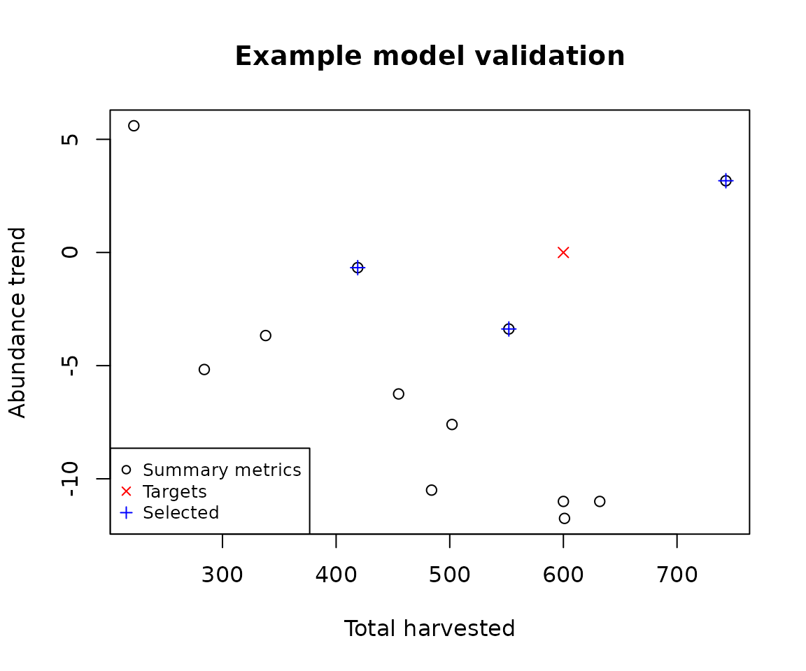

Simple workflow example for a population model
Global ChEC Lab
2024-04-03
Source:vignettes/simple_example.Rmd
simple_example.RmdIn this vignette we present a simple example of the poems workflow using a fictitious population model. The purpose of this example is to demonstrate how the components of the package are used to build an ensemble of viable models that best match known or desired patterns. Although the package is designed to facilitate building complex models and running multitudes of sample simulations, the scale and complexity of this demonstration model is deliberately minimal so as to easily examine the outputs at every stage of the workflow.
Workflow
The poems workflow, which implements a pattern-oriented modeling (POM) approach (Grimm et al., 2005), is achieved via a framework of interoperable components:
The workflow is summarized by the following six steps:
- Build the population model for the study region.
- Build generators for dynamically generating model parameters.
- Sample model and generator parameters for each simulation.
- Build a simulation manager to run each simulation.
- Build a results manager to generate summary results (metrics).
- Build a validator to select a model ensemble.
Step 1: Build the population model for the study region
Create a model template using the PopulationModel class. If the model is spatially explicit, then define the study region via the Region class. All fixed model inputs, such as environmental correlations, as well as any user-defined functions for processes such as harvesting, should be set at this stage.
We could create these components in any order and set model parameters separately, but let’s setup our study region, generate environmental correlations, and define a harvest function prior to initializing the template model with all the fixed parameters.
Study region
First, we’ll define our study region (denoted U Island) with some longitude-latitude coordinates.
# Demonstration example region (U Island)
coordinates <- data.frame(
x = rep(seq(177.01, 177.05, 0.01), 5),
y = rep(seq(-18.01, -18.05, -0.01), each = 5)
)
template_raster <- Region$new(coordinates = coordinates)$region_raster # full extent
template_raster[][-c(7, 9, 12, 14, 17:19)] <- NA # make U Island
region <- Region$new(template_raster = template_raster)
raster::plot(region$region_raster,
main = "Example region (cell indices)",
xlab = "Longitude (degrees)", ylab = "Latitude (degrees)",
colNA = "blue"
)Environmental correlation
Next, we’ll define a distance-based spatial correlation for applying environmental stochasticity within our model. The generated correlation data is compacted for computational efficiency (with large-scale models).
# Distance-based environmental correlation (via a compacted Cholesky decomposition)
env_corr <- SpatialCorrelation$new(region = region, amplitude = 0.4, breadth = 500)
correlation <- env_corr$get_compact_decomposition(decimals = 2)
correlation # examine
#> $matrix
#> [,1] [,2] [,3] [,4] [,5] [,6] [,7]
#> [1,] 1 0.01 0.04 0.04 0.04 0.02 0.04
#> [2,] 0 1.00 1.00 0.01 1.00 0.02 0.01
#> [3,] 0 0.00 0.00 1.00 0.00 0.05 0.05
#> [4,] 0 0.00 0.00 0.00 0.00 1.00 1.00
#>
#> $map
#> [,1] [,2] [,3] [,4] [,5] [,6] [,7]
#> [1,] 1 1 1 2 3 3 4
#> [2,] NA 2 3 3 5 4 5
#> [3,] NA NA NA 4 NA 5 6
#> [4,] NA NA NA NA NA 6 7Harvest function
Let’s now define a simple harvest function, which is optionally list-nested with a harvest rate parameter. We’ll also define an alias to the harvest rate so we can sample this parameter later.
Template model
Finally, we can build our template model with these and other fixed parameters.
# Population (simulation) model template for fixed parameters
stage_matrix <- matrix(
c(
0, 2.5, # Leslie/Lefkovitch matrix
0.8, 0.5
),
nrow = 2, ncol = 2, byrow = TRUE,
dimnames = list(c("juv", "adult"), c("juv", "adult"))
)
stage_matrix # examine
#> juv adult
#> juv 0.0 2.5
#> adult 0.8 0.5
model_template <- PopulationModel$new(
region = region,
time_steps = 10, # years
populations = region$region_cells, # 7
stages = 2,
stage_matrix = stage_matrix,
demographic_stochasticity = TRUE,
standard_deviation = 0.05,
correlation = correlation,
density_dependence = "logistic",
harvest = harvest,
results_selection = c("abundance", "harvested"),
attribute_aliases = harvest_rate_alias
)Step 2: Build generators for dynamically generating model parameters
Some model parameters are single values, whilst others are represented as arrays and other multi-value data structures. Usually, we don’t wish to sample each individual value within these multi-value parameters (in step 3), but to generate them dynamically via one or more intermediate sampled parameters. Here we build generators for model initial abundance, carrying capacity, and dispersal.
Habitat suitability
Firstly, our initial abundance and carrying capacity generator utilizes an example (mock) habitat suitability for our defined study region.
# Example habitat suitability
example_hs <- c(0.8, 1, 0.7, 0.9, 0.6, 0.7, 0.8)
example_hs_raster <- region$region_raster
example_hs_raster[region$region_indices] <- example_hs
raster::plot(example_hs_raster,
main = "Example habitat suitability",
xlab = "Longitude (degrees)", ylab = "Latitude (degrees)",
colNA = "blue"
)Initial abundance and carrying capacity generator
The generator utilizes generic template functionality for user-defined custom functions. It uses sampled input parameters (initial total abundance and maximum cell density), along with habitat suitability, to generate the desired output model parameters (initial abundance and carrying capacity) via these user-defined functions. Generators can also be configured to read values from files or generate values via probabilistic distributions.
# Initial abundance and carrying capacity generated via example habitat suitability
capacity_gen <- Generator$new(
description = "Capacity generator",
example_hs = example_hs, # template attached
inputs = c("initial_n", "density_max"),
outputs = c("initial_abundance", "carrying_capacity")
)
capacity_gen$add_generative_requirements(list(
initial_abundance = "function",
carrying_capacity = "function"
))
capacity_gen$add_function_template("initial_abundance",
function_def = function(params) {
stats::rmultinom(1,
size = params$initial_n,
prob = params$example_hs
)[, 1]
},
call_params = c("initial_n", "example_hs")
)
capacity_gen$add_function_template("carrying_capacity",
function_def = function(params) {
round(params$density_max * params$example_hs)
},
call_params = c("density_max", "example_hs")
)
capacity_gen$generate(input_values = list(initial_n = 500, density_max = 100)) # test
#> $initial_abundance
#> [1] 70 90 73 72 56 68 71
#>
#> $carrying_capacity
#> [1] 80 100 70 90 60 70 80Dispersal generator
Our dispersal generator uses default functionality for generating dispersal rates between cells. Its sampled inputs parameterize the distance-based dispersal function (proportion dispersing and breadth of dispersal). The generator can be configured with a dispersal friction helper class object, which calculates equivalent dispersal distances for frictional landscapes and coastlines. Here it is used to ensure dispersal is not performed directly across the “water” in our example U-shaped island. The generated dispersal data is calculated via pre-calculated distance data and compacted for computational efficiency (with large-scale models).
# Distance-based dispersal generator
dispersal_gen <- DispersalGenerator$new(
region = region,
dispersal_max_distance = 3000, # in m
dispersal_friction = DispersalFriction$new(),
inputs = c("dispersal_p", "dispersal_b"),
decimals = 5
)
dispersal_gen$calculate_distance_data() # pre-calculate
test_dispersal <- dispersal_gen$generate(input_values = list(
dispersal_p = 0.5,
dispersal_b = 700
))
head(test_dispersal$dispersal_data[[1]])
#> target_pop source_pop emigrant_row immigrant_row dispersal_rate
#> 1 3 1 1 1 0.10284
#> 2 5 1 2 1 0.02115
#> 3 6 1 3 1 0.01501
#> 4 4 2 1 1 0.10284
#> 5 6 2 2 2 0.01501
#> 6 7 2 3 1 0.02115Note that there is no dispersal rate between cells 1 and 2 as there is “water” between those cells, and consequently dispersal between those cells must travel around the U-shaped island, which can’t be achieved in one simulation time-step since the “round” distance between those cells is greater than 3000 m.
Step 3: Sample model and generator parameters for each simulation
In order to explore the model parameter space to find the best models, we generate Latin hypercube samples of model and generator parameters to be simulated, using the LatinHypercubeSampler class. This class has functionality for generating sample parameters via Uniform, Normal, Lognormal, Beta, and Triangular distributions. For our example we only generate 12 samples. We encourage the user to generate hundreds, or thousands, of samples.
# Generate sampled values for variable model parameters via LHS
lhs_gen <- LatinHypercubeSampler$new()
lhs_gen$set_uniform_parameter("growth_rate_max", lower = 0.4, upper = 0.6, decimals = 2)
lhs_gen$set_uniform_parameter("harvest_rate", lower = 0.05, upper = 0.15, decimals = 2)
lhs_gen$set_uniform_parameter("initial_n", lower = 400, upper = 600, decimals = 0)
lhs_gen$set_uniform_parameter("density_max", lower = 80, upper = 120, decimals = 0)
lhs_gen$set_uniform_parameter("dispersal_p", lower = 0.2, upper = 0.5, decimals = 2)
lhs_gen$set_uniform_parameter("dispersal_b", lower = 400, upper = 1000, decimals = 0)
sample_data <- lhs_gen$generate_samples(number = 12, random_seed = 123)
sample_data # examine
#> growth_rate_max harvest_rate initial_n density_max dispersal_p dispersal_b
#> 1 0.50 0.09 575 111 0.26 481
#> 2 0.41 0.07 487 96 0.34 589
#> 3 0.44 0.09 483 110 0.42 509
#> 4 0.59 0.11 589 86 0.38 859
#> 5 0.56 0.06 441 92 0.21 667
#> 6 0.51 0.14 458 116 0.50 980
#> 7 0.54 0.05 416 88 0.28 447
#> 8 0.43 0.13 542 107 0.36 920
#> 9 0.46 0.12 422 101 0.43 849
#> 10 0.52 0.08 552 99 0.32 745
#> 11 0.48 0.11 525 119 0.25 789
#> 12 0.58 0.15 505 81 0.45 609Step 4: Build a simulation manager to run each simulation
We now wish to run a simulation for each set (or row) of sampled parameters. The SimulationManager class manages the generation of parameters (via the generators), the running the model simulations, and writing simulation results to disk. It also maintains a log of each simulation’s success and any errors or warnings encountered.
# Create a simulation manager and run the sampled model simulations
sim_manager <- SimulationManager$new(
sample_data = sample_data,
model_template = model_template,
generators = list(capacity_gen, dispersal_gen),
parallel_cores = 2,
results_dir = OUTPUT_DIR
)
run_output <- sim_manager$run()
run_output$summary
#> [1] "12 of 12 sample models ran and saved results successfully"
dir(OUTPUT_DIR, "*.RData") # includes 12 result files
#> [1] "sample_1_results.RData" "sample_10_results.RData"
#> [3] "sample_11_results.RData" "sample_12_results.RData"
#> [5] "sample_2_results.RData" "sample_3_results.RData"
#> [7] "sample_4_results.RData" "sample_5_results.RData"
#> [9] "sample_6_results.RData" "sample_7_results.RData"
#> [11] "sample_8_results.RData" "sample_9_results.RData"
dir(OUTPUT_DIR, "*.txt") # plus simulation log
#> [1] "simulation_log.txt"Note that the output directory contains a R-data result files for each sample simulation and a simulation log file.
Step 5: Build a results manager to generate summary results (metrics)
We now wish to collate summary results for each of our simulations via the ResultsManager class. This manager loads the results from each sample simulation into an intermediate PopulationResults class object, which dynamically generates further results. We need to define functions for calculating summary metrics, as well as any matrices (one row of values per simulation) that we may be interested in examining. Each metric (or matrix) is associated with a user-defined function that utilizes results object attributes, or alternatively direct access to an attribute may be defined via a string. Once generated, the result metrics (a data frame) and/or matrices (a list) can be accessed via the manager. We may utilize the collated results in a variety of ways. However, with the objective of selecting the best models, we wish to compare (or validate) these result metrics to (with) known or desired target patterns (in step 6).
results_manager <- ResultsManager$new(
simulation_manager = sim_manager,
simulation_results = PopulationResults$new(),
summary_metrics = c("trend_n", "total_h"),
summary_matrices = c("n", "h"),
summary_functions = list(
trend_n = function(results) {
round(results$all$abundance_trend, 2)
},
total_h = function(results) {
sum(results$harvested)
},
n = "all$abundance", # string
h = "all$harvested"
),
parallel_cores = 2
)
gen_output <- results_manager$generate()
gen_output$summary
#> [1] "12 of 12 summary metrics/matrices generated from sample results successfully"
dir(OUTPUT_DIR, "*.txt") # plus generation log
#> [1] "generation_log.txt" "simulation_log.txt"
results_manager$summary_metric_data
#> index trend_n total_h
#> 1 1 -7.00 492
#> 2 2 4.71 347
#> 3 3 -0.83 469
#> 4 4 -0.38 466
#> 5 5 -4.00 282
#> 6 6 -2.50 672
#> 7 7 -1.40 214
#> 8 8 -15.00 585
#> 9 9 -6.33 543
#> 10 10 -7.00 405
#> 11 11 -8.33 602
#> 12 12 -4.00 602
results_manager$summary_matrix_list
#> $n
#> [,1] [,2] [,3] [,4] [,5] [,6] [,7] [,8] [,9] [,10]
#> [1,] 543 536 554 496 492 431 466 481 499 486
#> [2,] 462 442 450 470 445 439 467 495 492 486
#> [3,] 478 472 450 480 463 444 460 467 464 474
#> [4,] 421 394 362 368 338 342 354 388 391 391
#> [5,] 457 480 445 424 422 433 472 476 421 414
#> [6,] 476 441 390 401 381 411 408 391 431 416
#> [7,] 397 412 446 427 410 432 399 413 398 403
#> [8,] 496 447 398 442 368 353 353 336 367 334
#> [9,] 449 408 400 430 418 418 411 348 368 391
#> [10,] 541 520 470 453 456 412 438 455 468 477
#> [11,] 512 524 511 494 462 452 476 437 454 470
#> [12,] 389 385 346 319 312 293 310 341 361 341
#>
#> $h
#> [,1] [,2] [,3] [,4] [,5] [,6] [,7] [,8] [,9] [,10]
#> [1,] 53 55 55 48 50 42 44 48 49 48
#> [2,] 35 33 34 36 33 34 34 37 35 36
#> [3,] 48 47 46 47 46 46 47 49 47 46
#> [4,] 52 48 45 47 42 43 45 48 48 48
#> [5,] 29 33 30 26 26 27 29 30 27 25
#> [6,] 79 71 61 66 63 65 66 62 71 68
#> [7,] 20 22 23 22 20 22 20 25 19 21
#> [8,] 75 67 60 65 55 54 53 51 55 50
#> [9,] 60 55 54 58 56 55 53 47 50 55
#> [10,] 46 44 41 40 40 36 37 41 39 41
#> [11,] 63 64 63 62 57 57 60 56 59 61
#> [12,] 71 68 60 55 57 52 57 59 63 60Step 6: Build a validator to select a model ensemble
We now select and analyze our ‘best’ models via a Validator class object, which by default utilizes an approximate Bayesian computation (ABC) approach (Beaumont, Zhang, & Balding, 2002) provided by the abc library (Csillery et al., 2015). The validator can be configured appropriately for a problem domain (see the abc documentation). Here we use the default configuration to select the best 3 models, along with a weight value, which is indicative of the congruence between each model’s summary metrics and the corresponding target patterns. Also provided (with the default settings) is a diagnostic output (PDF) file, containing statistical information for analyzing the contribution of model parameters in the selection/validation process (see the abc documentation). For our simple demonstration the metrics and corresponding targets are relatively trivial, having the aim of producing stable population abundances with high harvest. However, the package facilitates the use more complex spatio-temporal metrics and targets (demonstrated in more advanced vignettes).
# Create a validator for selecting the 'best' example models
validator <- Validator$new(
simulation_parameters = sample_data,
simulation_summary_metrics =
results_manager$summary_metric_data[-1],
observed_metric_targets = c(trend_n = 0, total_h = 600),
output_dir = OUTPUT_DIR
)
suppressWarnings(validator$run(tolerance = 0.25, output_diagnostics = TRUE))
#> 12345678910
#> 12345678910
dir(OUTPUT_DIR, "*.pdf") # plus validation diagnostics (see abc library documentation)
#> [1] "validation_diagnostics.pdf"
validator$selected_simulations # top 3 models (stable abundance and high harvest)
#> index weight
#> 1 3 0.001237578
#> 2 4 0.000000000
#> 3 6 0.226283766We encourage the user to examine the generated diagnostics (PDF) output file, and to become acquainted with the analysis that this information facilitates (see the abc documentation). As our simple example only uses two metrics/targets, we can visualize the congruence of the selected models with the targets via a simple plot.
# Plot the simulation, targets, and selected metrics
graphics::plot(
x = results_manager$summary_metric_data$total_h,
y = results_manager$summary_metric_data$trend_n,
main = "Example model validation",
xlab = "Total harvested", ylab = "Abundance trend"
)
graphics::points(x = 600, y = 0, col = "red", pch = 4)
selected_indices <- validator$selected_simulations$index
graphics::points(
x = results_manager$summary_metric_data$total_h[selected_indices],
y = results_manager$summary_metric_data$trend_n[selected_indices],
col = "blue", pch = 3
)
graphics::legend("bottomleft",
legend = c("Summary metrics", "Targets", "Selected"),
col = c(1, "red", "blue"), pch = c(1, 4, 3), cex = 0.8
)
Summary
This demonstration has provided an overview of the poems workflow and modules via a simple population model example. We hope it has given you the foundation to progress to our more advanced Tasmanian Thylacine vignette, and towards utilizing the package for your own modeling projects.
Thank you :-)
References
Beaumont, M. A., Zhang, W., & Balding, D. J. (2002). ‘Approximate Bayesian computation in population genetics’. Genetics, vol. 162, no. 4, pp, 2025–2035.
Csillery, K., Lemaire L., Francois O., & Blum M. (2015). ‘abc: Tools for Approximate Bayesian Computation (ABC)’. R package version 2.1. Retrieved from https://CRAN.R-project.org/package=abc
Grimm, V., Revilla, E., Berger, U., Jeltsch, F., Mooij, W. M., Railsback, S. F., Thulke, H. H., Weiner, J., Wiegand, T., DeAngelis, D. L., (2005). ‘Pattern-Oriented Modeling of Agent-Based Complex Systems: Lessons from Ecology’. Science vol. 310, no. 5750, pp. 987–991.